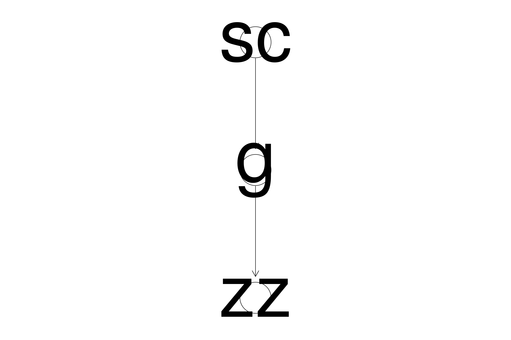

This section explains the principles of a code workflow so that you can template your scripts as much as possible. In general one script should do one thing and have one output rather than many. This will make the script considerably easier to readAs reflected in the construction of this site.
######################################### Data acquisiton#########################################
#This is where the data is imported
######################################### Data merging#########################################
#This is where external datasets are merged with the current dataset. This can be done after cleaning as well especially if you need to clean dates etc.
######################################### Data cleaning#########################################
#Self explanatory
######################################### Data accordionisation#########################################
#This is where new columns containing extrapolated data are createdI usually spend a lot of time defining the subsets of data I will be working on. Experience has shown me that I am capable of creating many subsets and then getting confused about which ones I am trying to manipulate so it’s best to be explicit about what you are using here. I separate each defined subset (which are named intelligenetly and intuitively) with a series of ‘########’ so I can navigate through them easily. I also create labels for each subset which I will use in the diagrammeR
######################################### Data forking (filtering and subsetting)#########################################
#1. All Filters should be numeric nrows and start with the term Fil_ appended to the nrow from which it is derived eg mydf becomes Fil_mydf<-nrow(mydf)
#Also need the original dataset that it comes from so data lineage is maintained
#This is where subsets of the data for later analysis are created. I also label the datasets for use in diagrammeR later so I can get an overview of my methodology. All the subsets should be created here and the parent dataset should also be labelled here.######################################### Data analysis#########################################
#All the data analysis can be done hereOne of the most important aspects of writing scripts is being able to forget about them and then when you need to change something, immediately understanding the script. THis relies on good documentation of the script and excellent commenting detailing what each step is doing. It is a pain at the time but nothing like the pain of trying to decipher what you have done later on.
Apart from commenting I find getting an overview of what I have done, and how I have subsetted the data to also be extremely useful. For this I use the packages diagrammeR and codeBender as per below
Always start the filter with the data source document
library(DiagrammeR)
#Create the labels for the DiagrammeR plot: Always append Lab_ prior to using the filter value eg Lab_Fil_OGD<-paste("The subsetN",Fil_OGD, sep = ": ")
Lab_Fil_Data1<-paste("The filter",20, sep = ": ")
Lab_Fil_Data2<-paste("The filter",34, sep = ": ")
Lab_Fil_Data3<-paste("The filter",25, sep = ": ")
Lab_Fil_All.df<-paste("All",22, sep = ": ")
Lab_Fil_OesophLab<-paste("OesophLab",82, sep = ": ")
#I always create a label here so I know where the original data source was in the first place:
Lab_Fil_Source<-"Mydata.xls"
#Now create the nodes
nodes <- create_nodes_df(nodes=3,
nodes = c(Lab_Fil_Source,Lab_Fil_All.df,Lab_Fil_OesophLab),
label = TRUE,
fontsize = 55,
fontcolour = "White",
type = "lower",
style = "filled",
color = "aqua",
shape = c("circle"),
x = c(0,0,0,0,0),
y = c(600,300,0,-300,-600,-900))
#This is the complicated part as you have to tie the labels up together
edges <- create_edges_df(from = c(1,2),
to = c(2,3),
#rel = c(nrow(MyBariumDataAll), nrow(MyBariumDataSwall), nrow(MyBariumDataWithHRMAny), nrow(MyBariumDataWithHRMD)),
arrowhead = rep("normal", 60),
# color = c("red", "red", "red", "red", "red", "red"),
length = c(500,200,50,50),
fontsize = 55)
graph <-
create_graph(
nodes_df = nodes,
edges_df = edges)
#Unfortunately I can't get this to work in rmarkdown but it should work in Rstudio
#render_graph(graph)This library allows you to get an overview of your code. It is incredibly useful especially when your code base is large:
library(CodeDepends)
sc = readScript("Meta_Workflow.Rmd")
g = makeVariableGraph( info =getInputs(sc))
if(require(Rgraphviz))
zz = layoutGraph(g)
graph.par(list(nodes = list(fontsize = 36)))
renderGraph(zz)